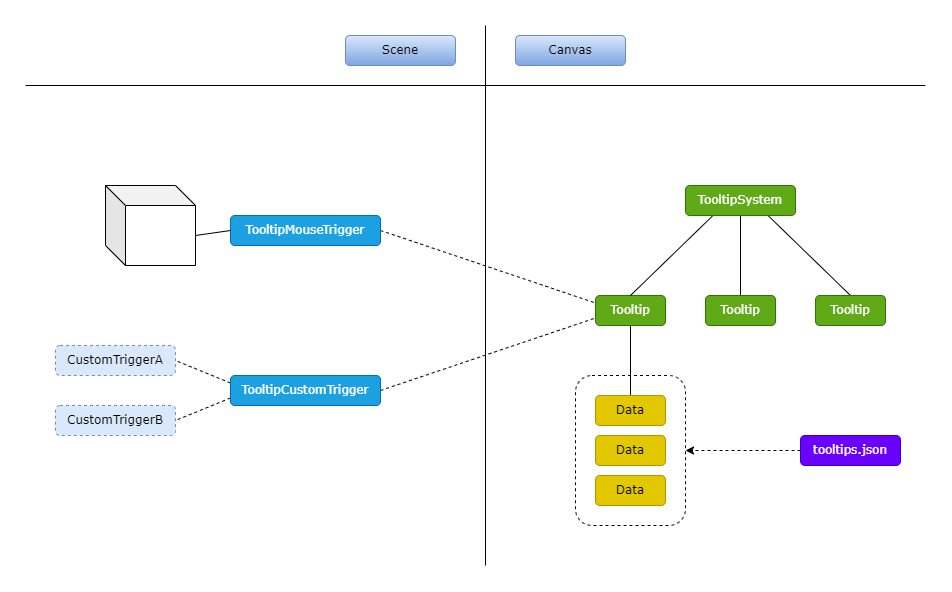
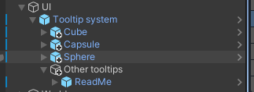
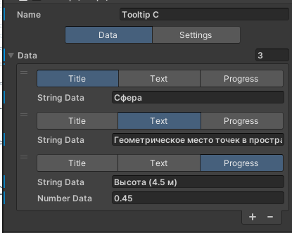
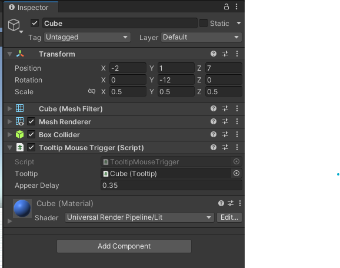

Модуль вывода информационных сообщений
Обзор
Модуль для вывода информационных сообщений (выносок). Содержит префаб выноски и компоненты для отображения выноски при наведении курсора.
Схема компонентов модуля
Как использовать модуль
1) Разместите префаб TooltipSystem на UI канвасе.
- TooltipSystem должен занимать весь экран для правильного соотношения положения объекта в мире и выноски на экране
- присвойте главную камеру в поле Camera. Это камера, которая использутеся для расчета положения выносок
2) Разместите по одному префабу Tooltip для каждой выноски, которая используется в программе.
- выноски должны быть потомками объекта TooltipSystem, но не обязательно прямыми потомками
- если в иерархии между Tooltip и TooltipSystem есть другие объекты, то они тоже должны занимать весь экран, как и TooltipSystem
3) Присвойте каждой выноске в поле World Point объект, к которому будет привязана эта выноска. Выноска будет появляться возле этого объекта и следовать за ним.
- настройте параметры геометрии в выносках, которые определяют положение выноски относительно объекта. Во время настройки появляется гизмо на объекте, к которому привязана выноска. Это гизмо отображает как будет выглядеть выноска, для удобной настройки геометрии без необходимости запуска программы
4) Настройте данные для выноски в инспекторе Tooltip.
- эти данные будут использоваться по умолчанию, если файл с данными tooltips.json не будет найден или в нем не окажется данных для этой выноски
- если tooltips.json содержит данные для этой выноски, то данные из файла перезапишут данные в выноске
5) (опционально) Настройте контроллеры для управления выносками. Контроллеры определяют когда появляются и исчезают выноски. Вместо контроллеров можно управлять выносками напрямую через компонент Tooltip
- контроллер TooltipMouseTrigger отображает выноску при наведении курсора на объект. Компонент должен находиться на объекте с коллайдером
- контроллер TooltipCustomTrigger позволяет создать собственную логику для отображения выноски, для этого нужно унаследовать этот класс и переопределить метод IsVisible()